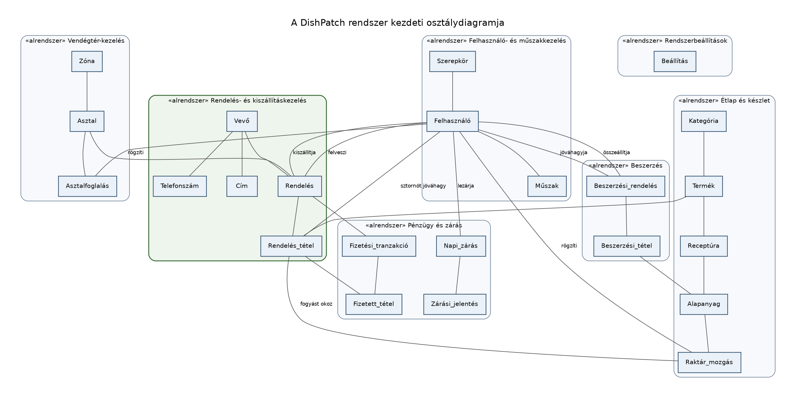
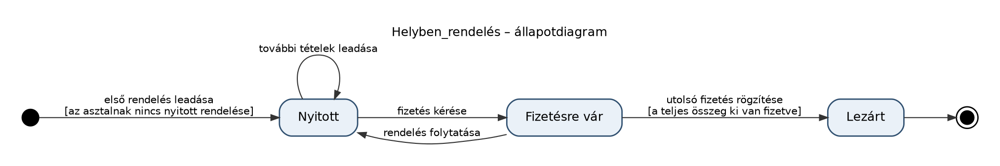
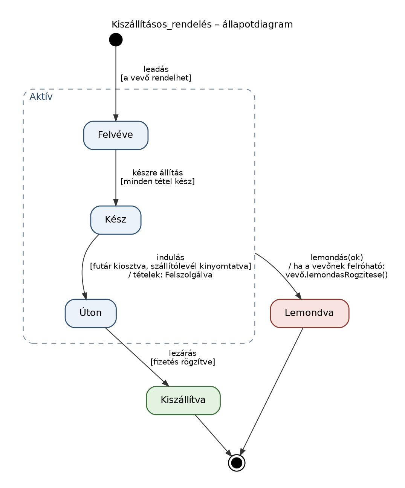
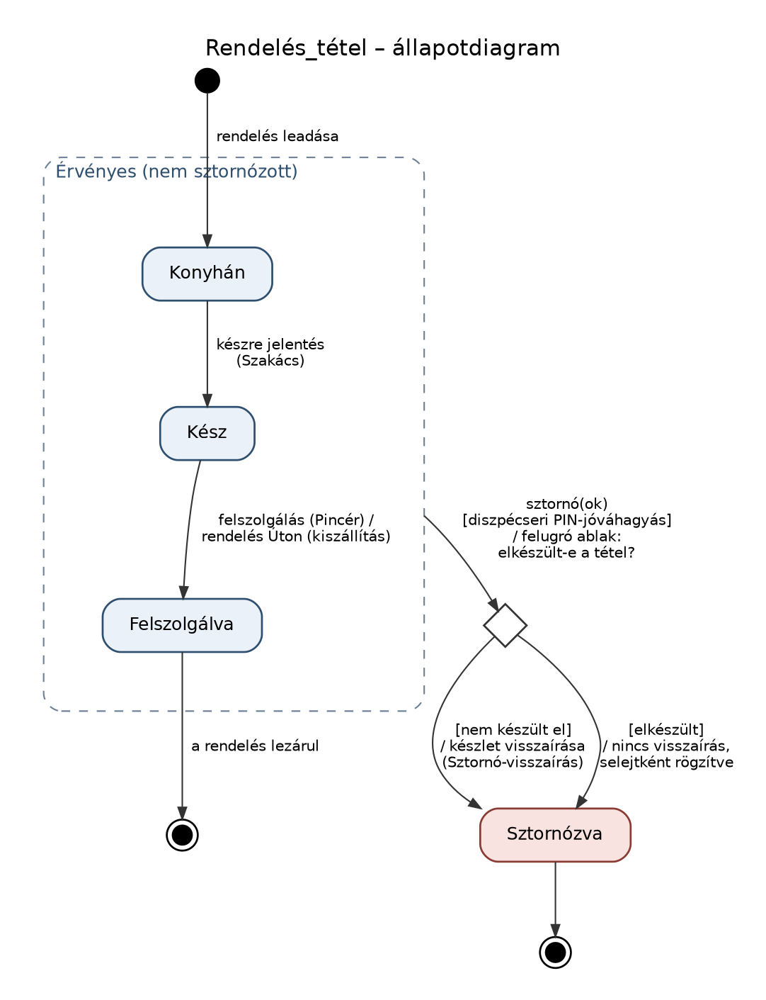
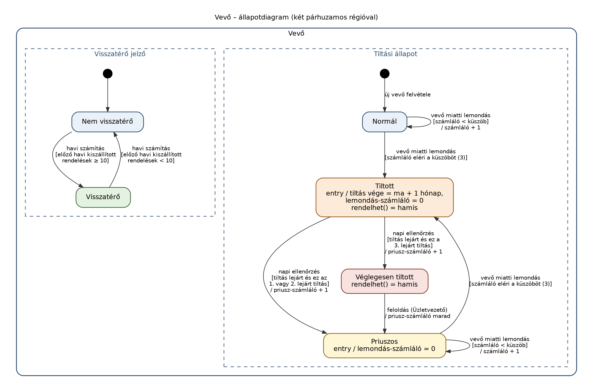
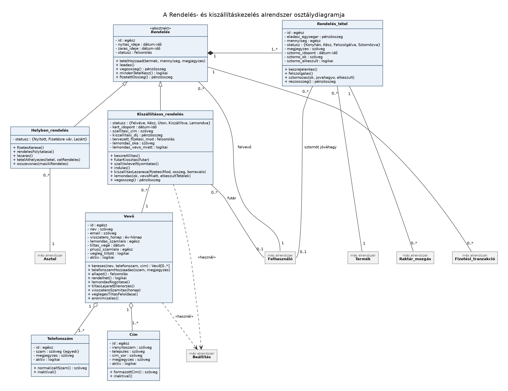

Az analízis modell célja, hogy az SRS-ben rögzített funkcionális követelményekből (use case-ekből) azonosítsa a DishPatch rendszer probléma terének osztályait, azok kapcsolatait, attribútumait és műveleteit, a megvalósítás technikai részleteitől függetlenül. A modell a rendszert alrendszerekre bontja, majd az első, legösszetettebb alrendszert – a Rendelés- és kiszállításkezelést – statikus, dinamikus és funkcionális szempontból is részletesen kidolgozza.
A dokumentum az iteratív vízesés modell „Rendszer- és szoftvertervezés” fázisát készíti elő: az itt azonosított osztályokból készül a Rendszertervezés adatmodellje, ezért az osztály- és attribútumnevek megegyeznek az ott szereplő egyedek és mezők neveivel. A felhasználói felület (Tauri kliens nézetei) és az adatbázis-elérés (Spring Data JPA) osztályait nem itt, hanem a Rendszertervezés dokumentum tárgyalja.
Az SRS use case-eiben szereplő főnevekből (pl. rendelés, tétel, asztal, vevő, cím, termék, alapanyag, fizetés, zárás) kiindulva az alábbi kezdeti osztálydiagram készült. Ezen a szinten még csak az osztályok és a köztük lévő alapvető kapcsolatok szerepelnek, attribútumok és műveletek nélkül.
A rendszer kezdeti osztálydiagramja

| Osztály | Rövid leírás |
|---|---|
| Szerepkör | A dolgozók munkakörei és jogosultsági szintjei (Pincér, Szakács, Diszpécser, Üzletvezető, Könyvelő, Futár). |
| Felhasználó | Az étterem egy dolgozója, aki (a Futár kivételével) PIN-kóddal lép be a rendszerbe. |
| Műszak | Egy dolgozó adott napi munkavégzése; ebből készül a zárási jelentések dolgozói listája. |
| Zóna | Az étterem egy fizikai területe (pl. Terasz, Belső terem). |
| Asztal | A vendégtér egy asztala, amelyhez helyben fogyasztásos rendelések tartoznak. |
| Asztalfoglalás | Egy vendég előzetes foglalása egy asztalra, adott időpontra. |
| Vevő | A kiszállításos rendelést leadó személy, a vevői jelzőivel (visszatérő, tiltott, priuszos, véglegesen tiltott). |
| Cím | Egy vevő egy szállítási címe. |
| Rendelés | Egy fogyasztás vagy kiszállítás fejléce: helyben fogyasztásos vagy kiszállításos. |
| Rendelés_tétel | Egy rendelés egy terméke, a rendeléskori eladási árral és saját állapottal. |
| Kategória | A termékek csoportja (pl. Levesek, Italok) az adókulccsal. |
| Termék | Az étlapon vagy itallapon szereplő késztermék. |
| Alapanyag | A raktárkészlet egy eleme, beszerzési árral és minimumkészlettel. |
| Receptúra | Megadja, hogy egy termékhez melyik alapanyagból mennyi kell. |
| Raktár_mozgás | A készlet egy változása (Bevételezés, Selejt, Fogyás, Sztornó-visszaírás). |
| Beszerzési_rendelés | A beszállítónak szóló, üzletvezetői jóváhagyáshoz kötött rendelési előrejelzés. |
| Beszerzési_tétel | Egy beszerzési rendelés egy alapanyaga és mennyisége. |
| Fizetési_tranzakció | Egy fizetési módon történt kiegyenlítés egy rendeléshez. |
| Fizetett_tétel | Megadja, hogy egy tranzakció mely tételek mekkora részét fizette ki (tételenkénti asztalbontás). |
| Napi_zárás | A nap végi elszámolás, fizetési módonkénti összesítővel. |
| Zárási_jelentés | A napi zárás e-mailben küldött jelentése (könyvelői vagy üzletvezetői). |
| Beállítás | Az Üzletvezető által módosítható rendszerbeállítás (pl. vevői jelzők küszöbei, kiszállítási díj). |
Az osztályokat funkcionálisan összetartozó alrendszerekbe soroltuk. Az alrendszerek közötti kapcsolatokat a lehető legkevesebb osztálypáron keresztül tartjuk, hogy egymástól függetlenül fejleszthetők és tesztelhetők legyenek.
| Alrendszer | Osztályok | Felelősség |
|---|---|---|
| Felhasználó- és műszakkezelés | Szerepkör, Felhasználó, Műszak | Dolgozók, PIN-alapú azonosítás, jogosultságok és a napi műszak nyilvántartása. |
| Vendégtér-kezelés | Zóna, Asztal, Asztalfoglalás | Az asztaltérkép, az asztalok állapotának számítása és a foglalások kezelése. |
| Rendelés- és kiszállításkezelés (első alrendszer) | Rendelés, Rendelés_tétel, Vevő, Cím | Helyben fogyasztásos és kiszállításos rendelések felvétele, állapotaik vezetése, sztornó, vevőnyilvántartás és vevői jelzők. |
| Étlap és készlet | Kategória, Termék, Alapanyag, Receptúra, Raktár_mozgás | Terméktörzs, receptúrák, automatikus készletlevonás, bevételezés, leltár és készletriasztás. |
| Beszerzés | Beszerzési_rendelés, Beszerzési_tétel | A beszállítói rendelések összeállítása (Diszpécser), jóváhagyása (Üzletvezető) és elküldése. |
| Pénzügy és zárás | Fizetési_tranzakció, Fizetett_tétel, Napi_zárás, Zárási_jelentés | Fizettetés, tételenkénti asztalbontás, napi zárás, a könyvelői és az üzletvezetői jelentés elküldése. |
| Rendszerbeállítások | Beállítás | A többi alrendszer által használt, Üzletvezető által módosítható paraméterek. |
A felhasználói felület (felszolgálói, konyhai, diszpécseri és vezetői nézet) és az adatelérési réteg nem része a fenti, probléma téri alrendszereknek; ezeket a Rendszertervezés dokumentum részletezi.
Az attribútumokat a use case-ek leírásaiból és a zárási jelentések adatigényéből vezettük le. A teljes lista a 3.6 pontban szerepel; az alábbi döntések igényelnek magyarázatot:
Az alrendszer négy osztályának van nem triviális életciklusa. Az állapotokat és az átmeneteket az alábbi állapotdiagramok és táblázatok írják le; minden átmenetet a megadott szerepkör vált ki a felületen, kivéve az ütemezett (rendszer által végzett) átmeneteket.
Helyben fogyasztásos rendelés
A Helyben_rendelés állapotdiagramja

| Kiinduló állapot | Esemény | Feltétel | Célállapot | Végrehajtó |
|---|---|---|---|---|
| – | Első rendelés leadása az asztalnál | Az asztalnak nincs nyitott rendelése | Nyitott | Pincér |
| Nyitott | További tételek leadása | – | Nyitott | Pincér |
| Nyitott | A vendég fizetni kíván | – | Fizetésre vár | Pincér |
| Fizetésre vár | A vendég mégis rendel még | – | Nyitott | Pincér |
| Fizetésre vár | Utolsó fizetés rögzítése | A nem sztornózott tételek teljes összege ki van fizetve | Lezárt | Pincér |
Kiszállításos rendelés
A Kiszállításos_rendelés állapotdiagramja

| Kiinduló állapot | Esemény | Feltétel | Célállapot | Végrehajtó |
|---|---|---|---|---|
| – | Rendelés leadása | A vevő rendelhet (nem tiltott, nem véglegesen tiltott) | Felvéve | Diszpécser |
| Felvéve | Készre állítás | Minden nem sztornózott tétel Kész | Kész | Diszpécser |
| Kész | Futár indulása | Futár kiosztva, szállítólevél kinyomtatva | Úton | Diszpécser |
| Úton | A futár visszaér, leadja a beszedett összeget | A fizetés rögzítve | Kiszállítva | Diszpécser |
| Felvéve, Kész, Úton | Lemondás (vevő lemondta, nem vette át, nem volt elérhető, vagy étterem miatti ok) | Lemondás oka megadva | Lemondva | Diszpécser |
A Kiszállítva és a Lemondva végállapot. A vevőnek felróható lemondás a vevő lemondás-számlálóját is növeli (lásd a Vevő állapotdiagramját).
Rendelési tétel
A Rendelés_tétel állapotdiagramja

| Kiinduló állapot | Esemény | Feltétel | Célállapot | Végrehajtó |
|---|---|---|---|---|
| – | A rendelés leadása | – | Konyhán | Pincér / Diszpécser |
| Konyhán | Készre jelentés a KDS-en | – | Kész | Szakács |
| Kész | Felszolgálás (helyben), illetve a rendelés Úton állapotba kerülése (kiszállítás) | – | Felszolgálva | Pincér / rendszer |
| Konyhán, Kész, Felszolgálva | Sztornó | Diszpécseri PIN-kódos jóváhagyás és sztornó ok megadva | Sztornózva | Diszpécser |
Sztornókor a rendszer a tétel receptúra szerinti alapanyagait Sztornó-visszaírás típusú raktármozgással visszaírja a készletbe.
Vevő (vevői jelzők)
A Vevő állapotdiagramja

| Kiinduló állapot | Esemény | Feltétel | Célállapot | Végrehajtó |
|---|---|---|---|---|
| – | Új vevő felvétele | – | Normál | Diszpécser |
| Normál, Priuszos | Vevőnek felróható lemondás | A lemondás-számláló eléri a küszöböt (alapértelmezés: 3) | Tiltott | Diszpécser (a lemondással) |
| Tiltott | Napi ütemezett ellenőrzés | A tiltás lejárt, és a lejárt tiltások száma ezzel 3 alatt marad | Priuszos | Rendszer |
| Tiltott | Napi ütemezett ellenőrzés | A tiltás lejárt, és ez a harmadik lejárt tiltás | Véglegesen tiltott | Rendszer |
| Véglegesen tiltott | Végleges tiltás feloldása | – | Priuszos | Üzletvezető |
Tiltott és Priuszos állapotba lépéskor a lemondás-számláló nullázódik (Tiltottba lépéskor a tiltás végének dátuma is beállítódik). Tiltott és Véglegesen tiltott állapotban a vevő nem rendelhet, erről a rendszer rendelésfelvételkor felugró ablakban értesíti a Diszpécsert. A visszatérő jelző a fenti állapotoktól független, párhuzamos jelölés: minden hónap első napján a rendszer kiszámítja, és csak az adott hónapra érvényes. A küszöbértékek a Beállítás osztályból származnak.
Az alrendszer fő adatfeldolgozási folyamatait az alábbi táblázatok írják le: mi a bemenet, milyen feldolgozás történik, és milyen adat keletkezik vagy módosul.
Kiszállításos rendelés felvétele és leadása (SRS 3.2)
| Lépés | Bemenet | Feldolgozás | Kimenet / módosult adat |
|---|---|---|---|
| 1. Vevő azonosítása | Telefonszám | Keresés a vevők között; ha nincs találat, új Vevő és Cím felvétele | Vevő (meglévő vagy új) |
| 2. Jelzők ellenőrzése | Vevő | A vevő állapotának számítása; tiltott vagy véglegesen tiltott vevőnél a folyamat megszakad, felugró ablakkal | Vevői állapot, visszatérő jelző a képernyőn |
| 3. Cím kiválasztása | Vevő címei | A kiválasztott vagy új cím szöveges másolása a rendelésbe | szallitasi_cim |
| 4. Tételek felvétele | Termékek, mennyiségek, megjegyzések | Elérhetőség és készlet ellenőrzése (Étlap és készlet alrendszer), az aktuális ár lemásolása | Rendelés_tétel-ek (még csak a kliens helyi kosarában) |
| 5. Leadás | Kosár, tervezett fizetési mód | Kiszállítási díj hozzáadása a Beállításból, mentés; a tételek Konyhán állapotba kerülnek, a KDS frissül | Kiszállításos_rendelés (Felvéve), Raktár_mozgás (Fogyás) tételenként |
Kiszállítás lezárása és lemondása
| Lépés | Bemenet | Feldolgozás | Kimenet / módosult adat |
|---|---|---|---|
| Futár kiosztása, indulás | Futár (az aznapi Műszakból) | Futár hozzárendelése, szállítólevél nyomtatása, a tételek Felszolgálva állapotba kerülnek | Rendelés: Kész → Úton |
| Lezárás | Beszedett összeg, tényleges fizetési mód, borravaló | Fizetési tranzakció létrehozása (Pénzügy és zárás alrendszer) | Fizetési_tranzakció, Rendelés: Kiszállítva |
| Lemondás | Lemondás oka, vevőnek felróható-e | Állapotváltás; ha felróható, a vevő lemondás-számlálójának növelése és szükség esetén a tiltás beállítása | Rendelés: Lemondva, Vevő számlálói és tiltás vége |
Ütemezett feldolgozások
| Feldolgozás | Gyakoriság | Bemenet | Kimenet / módosult adat |
|---|---|---|---|
| Tiltások lejáratának ellenőrzése | Naponta | Tiltott vevők, Beállítás (végleges tiltás küszöbe) | Vevő: Priuszos vagy Véglegesen tiltott |
| Visszatérő vevők számítása | Minden hónap első napján | Az előző naptári hónap Kiszállítva állapotú rendelései, Beállítás (visszatérő küszöb) | Vevő: visszatero_honap |
A dinamikus és a funkcionális modell minden átmenetéhez és feldolgozási lépéséhez hozzárendeltük azt az osztályt, amely az adott műveletért felelős. A műveletek részletes leírása a 3.6 pontban található.
| Osztály | Operáció | Kiváltó use case / átmenet |
|---|---|---|
| Rendelés | tetelHozzaad, leadas, vegosszeg, mindenTetelKesz, fizetettOsszeg | Rendelés rögzítése; Kiszállításos rendelés felvétele |
| Helyben_rendelés | fizetesKerese, rendelesFolytatasa, lezaras, tetelAthelyezes, osszevonas | Fizettetés; a helyben rendelés átmenetei |
| Kiszállításos_rendelés | keszreAllitas, futarKiosztas, szallitolevelNyomtatas, indulas, kiszallitasLezarasa, lemondas, vegosszeg | Kiszállítás állapotának kezelése |
| Rendelés_tétel | keszreJelentes, felszolgalas, sztornozas, reszosszeg | Étel készre jelentése; Védett sztornózás |
| Vevő | keresTelefonszamAlapjan, allapot, rendelhet, lemondasRogzitese, tiltasLejaratEllenorzes, visszateroSzamitas, veglegesTiltasFeloldasa, anonimizalas | Vevő keresése / felvétele; Vevői jelzők ellenőrzése; ütemezett feldolgozások |
| Cím | formazottCim, inaktival | Kiszállításos rendelés felvétele; Szállítólevél nyomtatása |
Az alrendszer részletes osztálydiagramja az attribútumokkal, az operációkkal, az öröklési viszonnyal és a számosságokkal. A más alrendszerbe tartozó osztályok (Asztal, Felhasználó, Termék, Raktár_mozgás, Fizetési_tranzakció, Beállítás) csak névvel szerepelnek rajta.
A Rendelés- és kiszállításkezelés alrendszer osztálydiagramja

Felelőssége: egy fogyasztás vagy kiszállítás közös adatainak és tételeinek kezelése, a végösszeg számítása. Önmagában nem példányosítható, csak a két alosztályán keresztül.
Együttműködők: Rendelés_tétel, Felhasználó (felvevő), Fizetési_tranzakció, Termék.
| Attribútum | Típus | Leírás |
|---|---|---|
| id | egész | Egyedi azonosító. |
| nyitas_ideje | dátum-idő | A rendelés leadásának (helyben: az asztal megnyitásának) ideje. |
| zaras_ideje | dátum-idő | A végállapotba (Lezárt, Kiszállítva, Lemondva) kerülés ideje. |
| statusz | felsorolás | Az aktuális állapot; értékkészletét az alosztály határozza meg. |
| Operáció | Argumentumok | Működés |
|---|---|---|
| tetelHozzaad | termek, mennyiseg, megjegyzes | Ellenőrzi a termék elérhetőségét és a készletet (készlethiány esetén hibát jelez, amelyet a Diszpécser felülbírálhat), majd új tételt hoz létre a termék aktuális árával. |
| leadas | – | Menti a rendelést, a tételeket Konyhán állapotba teszi, és tételenként kezdeményezi a receptúra szerinti készletlevonást. |
| vegosszeg | – | A nem sztornózott tételek részösszegeinek összege. Az alosztály felüldefiniálhatja. |
| mindenTetelKesz | – | Igaz, ha minden nem sztornózott tétel Kész vagy Felszolgálva állapotú. |
| fizetettOsszeg | – | A rendeléshez tartozó fizetési tranzakciók összege. |
Felelőssége: egy asztalhoz kötött fogyasztás vezetése a nyitástól a teljes kifizetésig, a tételek áthelyezésével és az asztalok összevonásával együtt.
Együttműködők: Asztal, Fizetési_tranzakció, Fizetett_tétel.
| Attribútum | Típus | Leírás |
|---|---|---|
| statusz | felsorolás | Nyitott, Fizetésre vár, Lezárt. |
| Operáció | Argumentumok | Működés |
|---|---|---|
| fizetesKerese | – | Nyitott → Fizetésre vár. |
| rendelesFolytatasa | – | Fizetésre vár → Nyitott, ha a vendég még rendel. |
| lezaras | – | Fizetésre vár → Lezárt, ha a fizetett összeg eléri a végösszeget. |
| tetelAthelyezes | tetel, celRendeles | A tételt egy másik asztal nyitott rendeléséhez rendeli. |
| osszevonas | masikRendeles | Egy másik asztal nyitott rendelésének összes tételét átveszi, a másik rendelést lezárja. |
Felelőssége: egy telefonon leadott, vevőhöz és címhez kötött rendelés vezetése a felvételtől a futár visszaérkezéséig vagy a lemondásig, a lemondások vevői jelzőkre gyakorolt hatásával együtt.
Együttműködők: Vevő, Cím, Felhasználó (futár), Fizetési_tranzakció, Beállítás.
| Attribútum | Típus | Leírás |
|---|---|---|
| statusz | felsorolás | Felvéve, Kész, Úton, Kiszállítva, Lemondva. |
| kert_idopont | dátum-idő | A vevő által kért szállítási időpont; üres, ha mielőbb kéri. |
| szallitasi_cim | szöveg | A kiválasztott Cím rendeléskori másolata. |
| kiszallitasi_dij | pénzösszeg | A rendeléskor érvényes kiszállítási díj. |
| tervezett_fizetesi_mod | felsorolás | Készpénz, Bankkártya, SZÉP-kártya vagy Utalvány; ebből tudja a futár, kell-e kártyaterminál. |
| lemondas_oka | szöveg | A lemondás indoka (csak Lemondva állapotban). |
| lemondas_vevo_miatt | logikai | Igaz, ha a lemondás a vevőnek felróható; csak ekkor számít bele a tiltásba. |
| Operáció | Argumentumok | Működés |
|---|---|---|
| keszreAllitas | – | Felvéve → Kész, ha mindenTetelKesz() igaz. |
| futarKiosztas | futar | Hozzárendeli az aznapi műszakban lévő Futár szerepkörű felhasználót. |
| szallitolevelNyomtatas | – | Kinyomtatja a címet, a tételeket, a fizetendő összeget és a tervezett fizetési módot. |
| indulas | – | Kész → Úton, ha van kiosztott futár; a tételeket Felszolgálva állapotba teszi. |
| kiszallitasLezarasa | fizetesiMod, osszeg, borravalo | Fizetési tranzakciót hoz létre, majd Úton → Kiszállítva. |
| lemondas | ok, vevoMiatt | Felvéve, Kész vagy Úton → Lemondva; ha vevoMiatt igaz, meghívja a vevő lemondasRogzitese() műveletét. |
| vegosszeg | – | Felüldefiniált: a tételek összegéhez hozzáadja a kiszállítási díjat. |
Felelőssége: egy termék adott mennyiségének nyilvántartása a rendelésen belül, a rendeléskori árral, a konyhai állapottal és az esetleges sztornó adataival.
Együttműködők: Rendelés, Termék, Felhasználó (sztornó jóváhagyója), Raktár_mozgás, Fizetett_tétel.
| Attribútum | Típus | Leírás |
|---|---|---|
| id | egész | Egyedi azonosító. |
| eladasi_egysegar | pénzösszeg | A termék ára a rendelés pillanatában. |
| mennyiseg | egész | A rendelt darabszám. |
| statusz | felsorolás | Konyhán, Kész, Felszolgálva, Sztornózva. |
| megjegyzes | szöveg | Elkészítési kérés (pl. „öntet nélkül”). |
| sztorno_idopont | dátum-idő | A sztornó ideje. |
| sztorno_ok | szöveg | A sztornó indoka. |
| Operáció | Argumentumok | Működés |
|---|---|---|
| keszreJelentes | – | Konyhán → Kész; értesíti a pincért, kiszállításnál a diszpécsert. |
| felszolgalas | – | Kész → Felszolgálva. |
| sztornozas | ok, jovahagyo | A jóváhagyó Diszpécser PIN-kódjának ellenőrzése után → Sztornózva; rögzíti a jóváhagyót, az időt és az okot, és kezdeményezi a készlet visszaírását. |
| reszosszeg | – | eladasi_egysegar × mennyiseg; sztornózott tételnél 0. |
Felelőssége: a kiszállításos vevők adatainak nyilvántartása és a vevői jelzők (visszatérő, tiltott, priuszos, véglegesen tiltott) szabályainak érvényesítése.
Együttműködők: Cím, Kiszállításos_rendelés, Beállítás.
| Attribútum | Típus | Leírás |
|---|---|---|
| id | egész | Egyedi azonosító. |
| nev | szöveg | A vevő neve. |
| telefonszam | szöveg | Egyedi; ez alapján keresi a Diszpécser a vevőt. |
| szöveg | Nem kötelező elérhetőség. | |
| visszatero_honap | szöveg (év-hónap) | Az a hónap, amelyben a vevő visszatérő. |
| lemondas_szamlalo | egész | A vevőnek felróható lemondások száma az utolsó nullázás óta. |
| tiltas_vege | dátum | A tiltás lejárta; ha a jövőben van, a vevő tiltott. |
| priusz_szamlalo | egész | A lejárt tiltások száma; ha legalább 1, a vevő priuszos. |
| vegleg_tiltott | logikai | Igaz, ha a vevő véglegesen tiltott. |
| aktiv | logikai | Hamis, ha a vevő adatai anonimizálva lettek. |
| Operáció | Argumentumok | Működés |
|---|---|---|
| keresTelefonszamAlapjan | telefonszam | Osztályszintű művelet: visszaadja a telefonszámhoz tartozó vevőt, ha létezik. |
| allapot | – | A tárolt mezőkből számítja: Véglegesen tiltott, Tiltott, Priuszos vagy Normál. |
| rendelhet | – | Hamis, ha az állapot Tiltott vagy Véglegesen tiltott; ilyenkor a felület felugró ablakot jelenít meg. |
| lemondasRogzitese | – | Növeli a lemondás-számlálót; ha eléri a küszöböt, a tiltás végét a tiltás időtartamával későbbi dátumra állítja, a számlálót nullázza. |
| tiltasLejaratEllenorzes | – | Naponta: lejárt tiltásnál törli a tiltás végét és növeli a priusz-számlálót; ha az eléri a végleges tiltás küszöbét, a vegleg_tiltott igazra vált. |
| visszateroSzamitas | honap | Havonta: ha az előző naptári hónap Kiszállítva állapotú rendeléseinek száma eléri a küszöböt, a visszatero_honap az aktuális hónap lesz. |
| veglegesTiltasFeloldasa | – | Csak Üzletvezető: a vegleg_tiltott hamisra vált, a vevő priuszos marad. |
| anonimizalas | – | A vevő kérésére (GDPR) törli a személyes adatait és címeit, a rendelések számviteli adatai megmaradnak. |
Felelőssége: egy vevő egy szállítási címének tárolása és szállítólevélre alkalmas formázása.
Együttműködők: Vevő, Kiszállításos_rendelés.
| Attribútum | Típus | Leírás |
|---|---|---|
| id | egész | Egyedi azonosító. |
| iranyitoszam | szöveg | Irányítószám. |
| telepules | szöveg | Település. |
| cim_sor | szöveg | Utca, házszám, emelet, ajtó. |
| megjegyzes | szöveg | Pl. kapucsengő, kapukód. |
| aktiv | logikai | Hamis, ha a vevő már nem használja ezt a címet. |
| Operáció | Argumentumok | Működés |
|---|---|---|
| formazottCim | – | Egysoros szöveget állít elő a rendelésbe másoláshoz és a szállítólevélhez. |
| inaktival | – | A címet a választható címek közül eltávolítja, a korábbi rendeléseket nem érinti. |